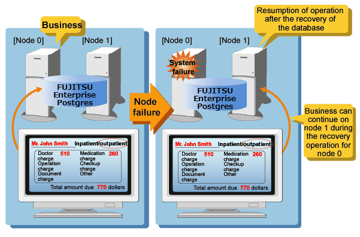

If the system stops, services are interrupted until recovery is complete. In large-scale systems, the interruption takes longer, and may cause significant disruption for many people receiving the services.
In FUJITSU Enterprise Postgres, the failover feature integrated with the cluster software can minimize the system stoppage time when an issue occurs.
Medical accounting system
Some hospitals with a large number of patients manage and operate the various data required for accounting in a database. If this accounting system stops and takes several minutes to recover, it is expected that this will have a significant impact.
But if failover is applied to this kind of system and an issue occurs on the operating server, it is quickly switched and the standby server takes over operation, so that services are provided without interruption.
The example below illustrates a medical accounting system using failover.

See
Refer to the Cluster Operation Guide (PRIMECLUSTER) for information on the failover feature integrated with the cluster software.